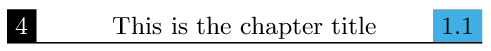
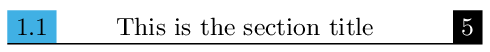

titleps for fancyhdr users
Headers and footers in standard LaTeX are somewhat clumsy. For years, fancyhdr has been the most popular way to redefine them, and rightly so. If you know how to redefine pages styles with fancyhdr and now you want to learn how to use titleps, this little guide will help you.
Marking mechanism
Perhaps the biggest difference is that you must forget about
\leftmark, \rightmark, \markboth and \markright, as well as
redefining \sectionmark and the like.
Marks are handled by titleps behind the scenes, and instead of a
single mark (either \leftmark or \rightmark) containing all the
data partly formatted, you have access to separate ordinary commands
like \thesection.
In other words, with titleps all the format is done in the page style, and not partly when the mark is emitted and partly when the mark is retrieved.
For example:
\usepackage[dvipsnames,usenames]{color} \usepackage{titleps} \newpagestyle{main}[\small]{ \setheadrule{.55pt}% \sethead[\colorbox{black}{\color{white}{\thepage}}]% even-left [\chaptertitle]% even-center [\colorbox{CornflowerBlue}{\thesection}]% even-right {\colorbox{CornflowerBlue}{\thesection}}% odd-left {\sectiontitle}% odd-center {\colorbox{black}{\color{white}{\thepage}}}% odd-right } \pagestyle{main}
This gives:


You can even write, for example, \thesection on the footer and
\sectiontitle on the header.
Uppercased titles
Standard LaTeX classes uppercase the titles of table of contents,
indexes, etc., when putting marks. If you do not want titles to be
uppercased, fancyhdr provides \nouppercase, but this trick is not
necessary with titlps, because the mark is taken directly from the
argument of sectioning command without further processing.
Unfortunately, sectioning commands have to be patched slightly, but it
should work with any class keeping the original LaTeX syntax.
No default page style
The basic idea of fancyhdr is that there is a new page style named
fancy, which can be customized. On the other hand, titleps provides
a way for creating an arbitrary number of pages styles. Unlike
fancyhdr, by default titleps page styles are empty and there
is no need to clear them with \fancyhf{}.
Multiline headers
Multiline headers currently require a bit more work in titleps, because headers are horizontal boxes and line breaks are not allowed. However, it is pretty simple, and you have more control:
\newpagestyle{main}[\small]{ \headrule \sethead[\thepage] [] [{\begin{tabular}[b]{r@{}} \thesection\\\sectiontitle \end{tabular}}] {\begin{tabular}[b]{@{}l} \thesection\\\sectiontitle \end{tabular}} {} {\thepage} } \pagestyle{main}
Note the extra {} in the 3rd optional argument (even-right), because
tabular has in turn an optional argument.
Very likely you will see in the log warnings (one per page) similar to :
Overfull \vbox (6.69997pt too high) has occurred while \output is active
All you need then is to set \headheight accordingly:
\addtolength\headheight{6.7pt}
Extra marks
When fancyhdr was last released (2004), e-TeX and derivates (like pdftex) were not widely used yet. It uses a smart trick to provide a couple of extra marks, but little more. Instead, titleps takes full advantage of the multiple sets of marks provided by the e-TeX engine or compatible (pdftex, XeTeX, luatex), which is currently the default for LaTeX in most systems. Please, read the manual for further details.
Footnotes
Currently, titleps has nothing similar to \iffootnote. On the other
hand, you can assign a page style to a specific float (perhaps a
bleed), much like a \thispagestyle for floats.
A present?
The packages listed here are free – you don’t have to pay anything to use them. However, if you have found them useful enough as to give me a little present, I would be very grateful. Just go to the following wish list at Amazon.
Donate
You might consider supporting the development of these packages with a donation, too.